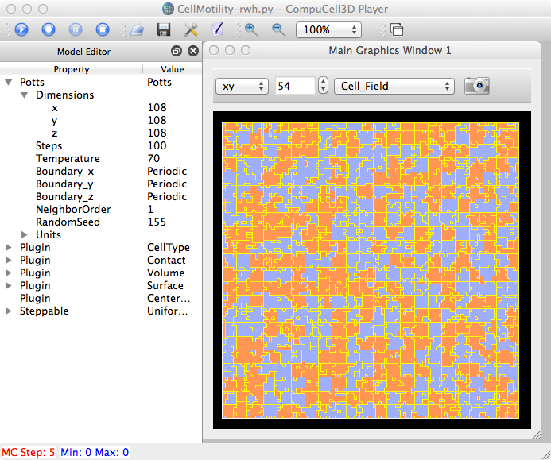
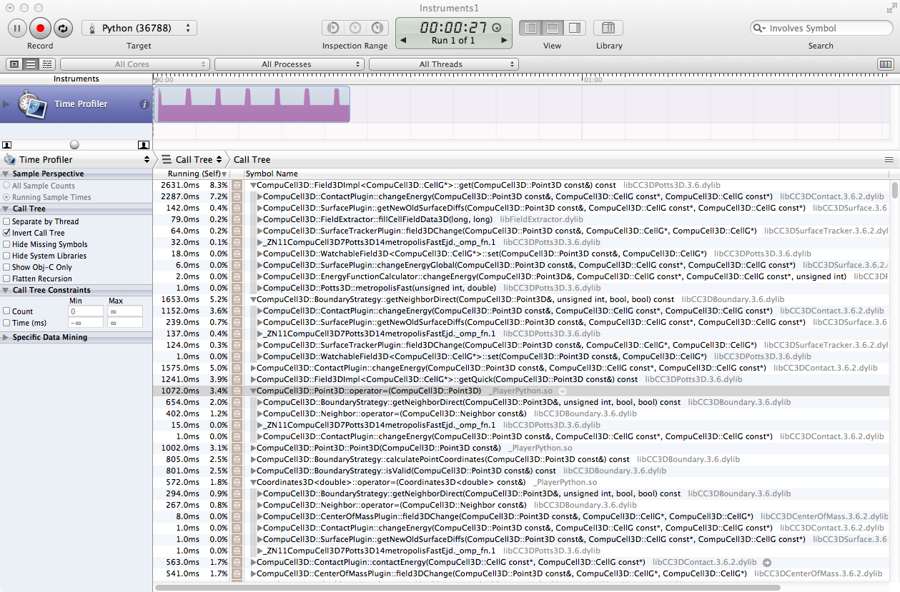
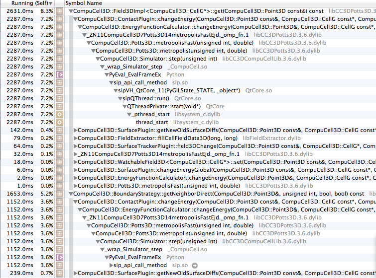

Using OSX Instruments to profile Gilberto's CellMotility sim (Aug 2012), a 3D lattice 108^3. (In Instruments, select OSX/CPU on left-side templates, then Time Profiler).

... MCS = 1 ncells, Average volume = 10648 118.305033809 FAST numberOfAttempts=1259712 Number of Attempted Energy Calculations=365716 Step 2 Flips 176870/1259712 Energy 93954 Cells 10648 Inventory=10648

Zooming in more:
